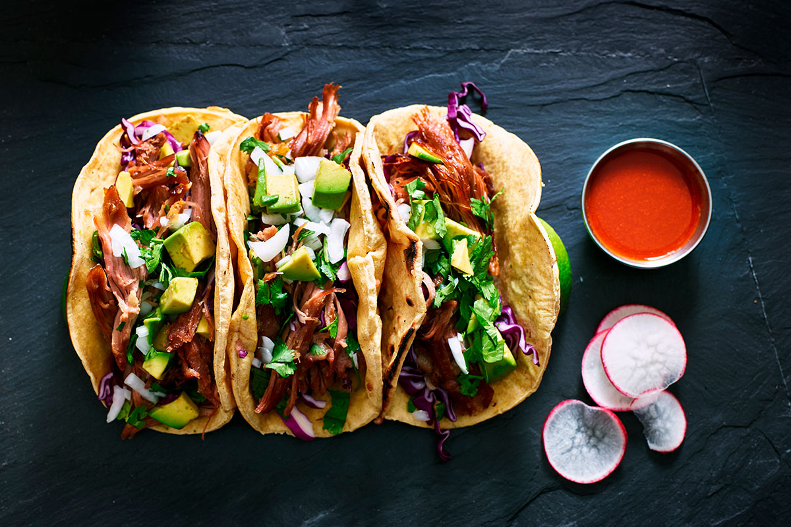

Tacos

Tacos al Pastor
This tacos were made with Pastor meat which consists on a pork meat marinated in a mix of ingredients, and also have some vegtables like avocados, onions, and cilantro
No doubt you should try this recipe on your own, its really cheap and efficiently for a family
Ingredients
Steps
Marinate the pork meat on the sauce for an a half hour
Cut into small pieces, like cubes
Cook it in a frying pan, fryer, grill, griddle, etc. Make sure it doesnt dry at all.
Warm the tortillas on a microwave
Put the meat on the tortillas
Cut some onions into small pieces, and do the same with the cilantro and avocados
>Put the vegetables on the tacos
Pray and enjoy
Home